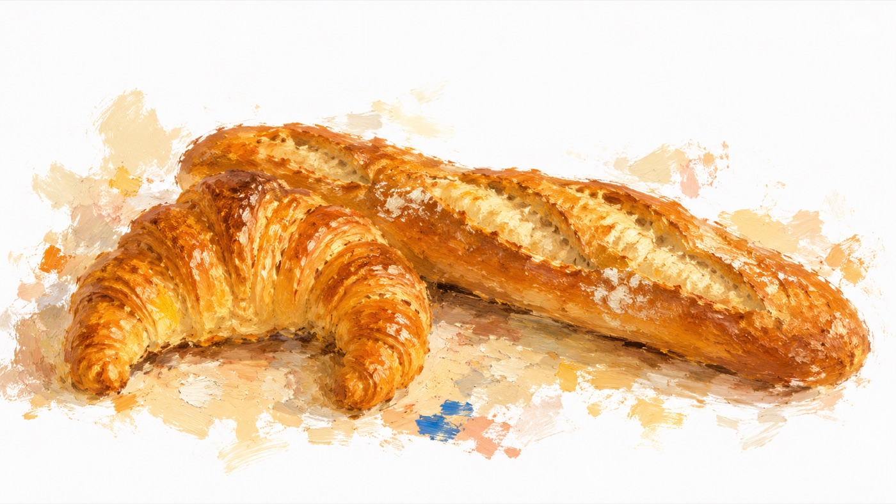

Concours de Boulangerie · Paris
パリ製パンコンクール図鑑
バゲット、クロワッサン——パリの職人技が競われる公式コンクールの日程・結果・受賞店を、出典付きでまとめています。

最新ランキング
コンクール名をタップすると、過去の全ランキングを年別に見られます
近くの受賞店を探す
現在地、またはホテル名・住所を入力すると、近い受賞店を距離順に表示します
または住所・ホテル名で検索
今話題のお店
コンクール受賞歴とは別に、SNS・メディアで話題になっているお店です(週1回ほど見直します)